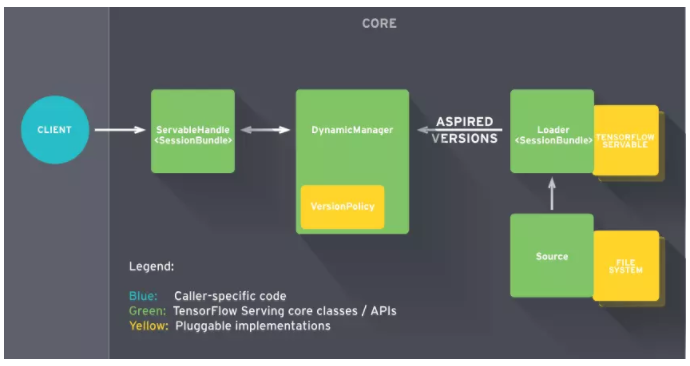

个人简介： wedo实验君, 数据分析师；热爱生活，热爱写作
当你训好你的模型，需要提供给外部使用的时候，你就需要把模型部署到线上，并提供合适的接口给外部调用。 你可能会考虑一些问题：
目前流行的深度学习框架Tensorflow和Pytorch， Pytorch官方并没有提供合适的线上部署方案；Tensorflow则提供了TFserving方案来部署线上模型推理。另外，Model Server for Apache MXNet 为MXNet模型提供推理服务。
本文为TFServing的使用指南。如果你是pytorch或者MXNet模型，也可以通过ONNX转成TFserving的模型，部署在TFServing上。
那什么是TFserving?
TFserving是Google 2017推出的线上推理服务；采用C/S架构，客户端可通过gRPC和RESTfull API与模型服务进行通信。

TFServing的特点：
强烈建议采用docker方式安装TFserving，安装依赖docker和nvidia-docker（TFserving的gpu需要）
#安装yum-utils工具和device-mapper相关依赖包
yum install -y yum-utils \
device-mapper-persistent-data \
lvm2
#添加docker-ce stable版本的仓库
yum-config-manager \
--add-repo \
https://download.docker.com/linux/centos/docker-ce.repo
#更新yum缓存文件
yum makecache fast
#查看所有可安装的docker-ce版本
yum list docker-ce --showduplicates | sort -r
# 安装docker-ce
yum install docker-ce-17.12.1.ce-1.el7.centos
#允许开机启动docker-ce服务
systemctl enable docker.service
#启动Docker-ce服务
systemctl start docker
#运行测试容器hello-world
docker run --rm hello-world
# 安装nvidia-docker2
yum install -y nvidia-docker2-2.0.3-1.docker17.12.1.ce
# 重启docker服务
service docker restart
docker pull tensorflow/serving:latest-gpu
# 可以选择其他版本如 docker pull tensorflow/serving:1.14.0-rc0-gpu
注意： docker版本和nvidia-docker要匹配
TFserving的模型需要转换成TFserving的格式， 不支持通常的checkpoint和pb格式。
TFserving的模型包含一个.pb文件和variables目录（可以为空）,导出格式如下：
.
├── 1
│ ├── saved_model.pb
│ └── variables
├── 2
│ ├── saved_model.pb
│ └── variables
不同的深度学习框架的转换路径：
(1) pytorch(.pth)--> onnx(.onnx)--> tensorflow(.pb) --> TFserving
(2) keras(.h5)--> tensorflow(.pb) --> TFserving
(3) tensorflow(.pb) --> TFserving
这里详细介绍下pb转换成TFserving模型
import tensorflow as tf
def create_graph(pb_file):
"""Creates a graph from saved GraphDef file and returns a saver."""
# Creates graph from saved graph_def.pb.
with tf.gfile.FastGFile(pb_file, 'rb') as f:
graph_def = tf.GraphDef()
graph_def.ParseFromString(f.read())
_ = tf.import_graph_def(graph_def, name='')
def pb_to_tfserving(pb_file, export_path, pb_io_name=[], input_node_name='input', output_node_name='output', signature_name='default_tfserving'):
# pb_io_name 为 pb模型输入和输出的节点名称，
# input_node_name为转化后输入名
# output_node_name为转化后输出名
# signature_name 为签名
create_graph(pb_file)
# tensor_name_list = [tensor.name for tensor in tf.get_default_graph().as_graph_def().node]
input_name = '%s:0' % pb_io_name[0]
output_name = '%s:0' % pb_io_name[1]
with tf.Session() as sess:
in_tensor = sess.graph.get_tensor_by_name(input_name)
out_tensor = sess.graph.get_tensor_by_name(output_name)
builder = tf.saved_model.builder.SavedModelBuilder(export_path) ## export_path导出路径
inputs = {input_node_name: tf.saved_model.utils.build_tensor_info(in_tensor)}
outputs = {output_node_name: tf.saved_model.utils.build_tensor_info(out_tensor)}
signature = tf.saved_model.signature_def_utils.build_signature_def(
inputs, outputs, method_name=tf.saved_model.signature_constants.PREDICT_METHOD_NAME)
builder.add_meta_graph_and_variables(
sess=sess, tags=[tf.saved_model.tag_constants.SERVING],
signature_def_map={signature_name: signature}, clear_devices=True) ## signature_name为签名，可自定义
builder.save()
pb_model_path = 'test.pb'
pb_to_tfserving(pb_model_path, './1', pb_io_name=['input_1_1','output_1'],signature_name='your_model')
模型导出后，同一个模型可以导出不同的版本（版本后数字），可以TFserving配置中指定模型和指定版本。TFserving的模型是通过模型名称和签名来唯一定位。TFserving 可以配置多个模型，充分利用GPU资源。
# models.config
model_config_list {
config {
name: 'your_model'
base_path: '/models/your_model/'
model_platform: 'tensorflow'
# model_version_policy {
# specific {
# versions: 42
# versions: 43
# }
# }
# version_labels {
# key: 'stable'
# value: 43
# }
# version_labels {
# key: 'canary'
# value: 43
# }
}
config {
name: "mnist",
base_path: "/models/mnist",
model_platform: "tensorflow",
model_version_policy: {
specific: {
versions: 1,
versions: 2
}
}
}
# 可以通过model_version_policy 进行版本的控制
# 建议把模型和配置文件放在docker外的本地路径，如/home/tfserving/models， 通过-v 挂载到docker内部
# --model_config_file： 指定模型配置文件
# -e NVIDIA_VISIBLE_DEVICES=0： 指定GPU
# -p 指定端口映射 8500为gRpc 8501为restful api端口
# -t 为docker镜像
nvidia-docker run -it --privileged -d -e NVIDIA_VISIBLE_DEVICES=0 -v /home/tfserving/models:/models -p 8500:8500 -p 8501:8501 \
-t tensorflow/serving:latest-gpu \
--model_config_file=/models/models.config
# /home/tfserving/models 结构
.
├── models.config
└── your_model
├── 1
│ ├── saved_model.pb
│ └── variables
└── 2
├── saved_model.pb
└── variables
# test
curl http://192.168.0.3:8501/v1/models/your_model
{
"model_version_status": [
{
"version": "2",
"state": "AVAILABLE",
"status": {
"error_code": "OK",
"error_message": ""
}
}
]
}
# 其他启动方式
# 如果多个模型在不同的目录，可以通过-mount 单独加载
nvidia-docker run -it --privileged -d -e NVIDIA_VISIBLE_DEVICES=0 \
--mount type=bind,source=/home/tfserving/models/your_model,target=/models/your_model \
--mount type=bind,source=/home/tfserving/models/your_model/models.config,target=/models/models.config \
-p 8510:8500 -p 8501:8501 \
-t tensorflow/serving:latest-gpu \
--model_config_file=/models/models.config
客户端可以通过gRpc和http方式调用TFserving服务模型，支持多种客户端语言，这里提供python的调用方式; 调用都是通过模型名称和签名来唯一对应一个模型
#
# -*-coding:utf-8 -*-
import tensorflow as tf
from tensorflow_serving.apis import predict_pb2
from tensorflow_serving.apis import prediction_service_pb2_grpc
import grpc
import time
import numpy as np
import cv2
class YourModel(object):
def __init__(self, socket):
"""
Args:
socket: host and port of the tfserving, like 192.168.0.3:8500
"""
self.socket = socket
start = time.time()
self.request, self.stub = self.__get_request()
end = time.time()
print('initialize cost time: ' + str(end - start) + ' s')
def __get_request(self):
channel = grpc.insecure_channel(self.socket, options=[('grpc.max_send_message_length', 1024 * 1024 * 1024),
('grpc.max_receive_message_length', 1024 * 1024 * 1024)]) # 可设置大小
stub = prediction_service_pb2_grpc.PredictionServiceStub(channel)
request = predict_pb2.PredictRequest()
request.model_spec.name = "your_model" # model name
request.model_spec.signature_name = "your_model" # model signature name
return request, stub
def run(self, image):
"""
Args:
image: the input image（rgb format）
Returns: embedding is output of model
"""
img = image[..., ::-1]
self.request.inputs['input'].CopyFrom(tf.contrib.util.make_tensor_proto(img)) # images is input of model
result = self.stub.Predict(self.request, 30.0)
return tf.make_ndarray(result.outputs['output'])
def run_file(self, image_file):
"""
Args:
image_file: the input image file
Returns:
"""
image = cv2.imread(image_file)
image = cv2.cvtColor(image, cv2.COLOR_BGR2RGB)
return self.run(image)
if __name__ == '__main__':
model = YourModel('192.168.0.3:8500')
test_file = './test.jpg'
result = model.run_file(test_file)
print(result)
# [8.014745e-05 9.999199e-01]
import cv2
import requests
class SelfEncoder(json.JSONEncoder):
def default(self, obj):
if isinstance(obj, np.ndarray):
return obj.tolist()
elif isinstance(obj, np.floating):
return float(obj)
elif isinstance(obj, bytes):
return str(obj, encoding='utf-8');
return json.JSONEncoder.default(self, obj)
image_file = '/home/tfserving/test.jpg'
image = cv2.imread(image_file)
image = cv2.cvtColor(image, cv2.COLOR_BGR2RGB)
img = image[..., ::-1]
input_data = {
"signature_name": "your_model",
"instances": img
}
data = json.dumps(input_data, cls=SelfEncoder, indent=None)
result = requests.post("http://192.168.0.3:8501/v1/models/your_model:predict", data=data)
eval(result .content)
# {'predictions': [8.01474525e-05, 0.999919891]}
本文介绍了TFserving部署线上推理服务，从模型的转换，部署启动和调用推理，欢迎交流，希望对你有帮助。 我们来回答下开篇提出的问题
用什么来部署： 当然是TFserving
怎么提供api接口： TFserving有提供restful api接口，现实部署时会在前面再加一层如flask api
多个模型GPU资源如何分配： TFserving支持部署多模型，通过配置
线上模型如何更新而服务不中断： TFserving支持模型的不同的版本，如your_model中1和2两个版本，当你新增一个3模型时，TFserving会自动判断，自动加载模型3为当前模型，不需要重启
参考资料